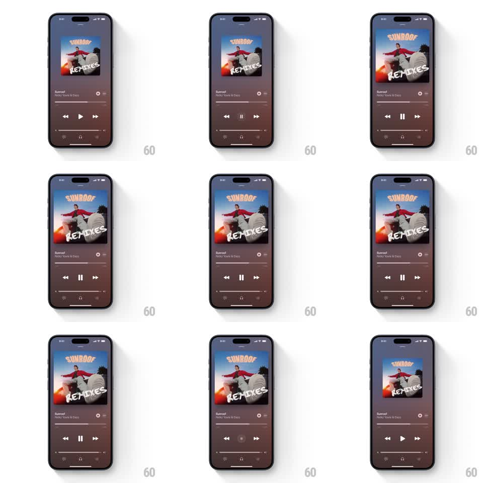

Media
Frame-by-frame

Rebuild this interaction 1:1: Apple Music's play/pause - toggling playback springs the album artwork between a small paused size and a large playing size, its shadow deepening as it grows, while the transport icon morphs between play and pause.

Rebuild this interaction 1:1: Apple Music's play/pause - toggling playback springs the album artwork between a small paused size and a large playing size, its shadow deepening as it grows, while the transport icon morphs between play and pause. ## Integration Integration: stack-agnostic spec - springs given as stiffness/damping, timed motions as duration + curve; map every value to your framework and animation library of choice. ## Scene Now Playing screen: background is a heavily blurred, darkened wash of the album art (maroon/brown). Square album artwork centered in the upper half, song title and artist below it, progress bar, then the transport row (skip back, play/pause, skip forward), volume slider at the bottom. ## Motion spec Pattern: artwork scale-and-shadow playback toggle. - Play: the artwork scales from ~0.82 to 1.0 (spring stiffness ~240, damping ~20, ~500ms with a gentle overshoot) and its drop shadow grows (blur radius and opacity up ~40%) as if the record lifts toward the listener. - Pause: the reverse - artwork recedes to 0.82, shadow tightens and lightens. - The icon morphs in place: play triangle to pause bars (and back) over 200ms - the triangle's vertices travel to become the two bars, no crossfade. - The background wash stays constant; only the artwork and shadow move. - Progress bar and skip controls do not animate - the artwork owns the moment. ## Calibration - The size delta is modest (~18%); more reads as a zoom, less reads as nothing. - Shadow and scale are coupled - animating one without the other breaks the lift illusion. ## Reduced motion Artwork crossfades between the two sizes over 150ms; icon swaps instantly. ## Don't miss - Paused is the smaller state - the artwork recedes when music stops, grows when it plays. Do not invert it. - The morph happens inside the same circular hit area; the button never changes size.